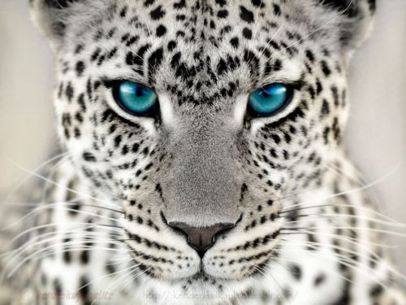

White Jaguar
Many ancient American cultures such as the Maya and Aztec, featured the jaguar in their mythologies, it was often regarded as a symbol of strength.
- Scientific Name: Panthera onca
- Length: 43 - 75 Inches
- Average Lifespan: 12-15 Years
- Habitat: American Continents
The Jaguar and the Leopard are often confused with one another in zoos. Their coloring and markings are so similar that it is difficult for people to distinguish them. The difference lies in the center of the Jaguars rosettes, because unlike the leopard, the Jaguar has spots inside of its rosettes! The Jag is also a much stockier animal than its cousin, with shorter legs and tail – giving it more of a pit bull type appearance.